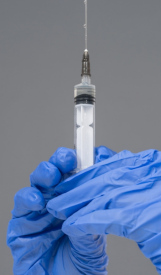

почему никогда нельзя приближаться к нему на улице!!!
ответ вы найдёте в этой статье.
на самом деле егор очень умный, воспитанный и образованый ученик "лицея №50 при ДГТУ"
ладно шучу...
ECЛИ УВИДИШЬ ЕГО - БЕГИ И НЕ ОГЛЯДЫВАЙСЯ!!!
ни в коем случае не приближайтесь к нему ближе чем на 1 км!
что делать, если вы приблизились к Егору, ближе чем на километр?
во-первых вы можете включить ему рамштайн, это успокоет его на время.
во-вторых идите спокойно, медленно. ни в коем случае не бегите! Если вы побежите, то он побежит за вами, так так подумает, что в той стороне распродажа швейцарских вещей или, что ещё хуже - превьюшек для видео!
почему Егор так опасен?
на самом деле Егор является разносчиком ужасно опасного егоро-вируса!
заражённые этим вирусом теряют индивидуальность и становятся невменяемыми!
этот вирус передаётся морально-нравственным путём очень быстро! Он успел заразить уже половину "Б" класса(класс в котором учится Егор) и начал заражать "В" класс
однако у некоторых людей, из-за долгого общения с разносчиком и заражёнными, выработался иммунитет к этому вирусу.
Но их разум тоже сильно деформируется в связи с продолжительным общением с ними...
как остановить/предупредить заражение вирусом?
учёным удалось разработать лекарство, лечащее человека и прекращающее необратимые процессы.

оно имеет небольшой побочный эффект, но, будте уверены, оно не как не вредит вашему здоровью
состав лекарства держится фармацевтами в строжайшем секрете, но нам удалось выяснить некоторые ингридиенты, например As, C17H19NO3 или KSN.
на последок хотим сказать: будьте бдительны и осторожны. предупредите своих родных и близких об опасности. в случае ЧС незамедлительно обращайтесь в службу устранения разносчиков ЕВ(Егоро-вируса) для предотвращения заражения ЕВ разносчиком и "спасения" заражённых.[CУРЕВ]
на главную...